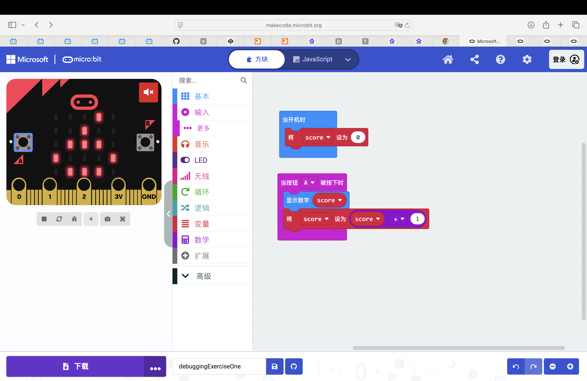
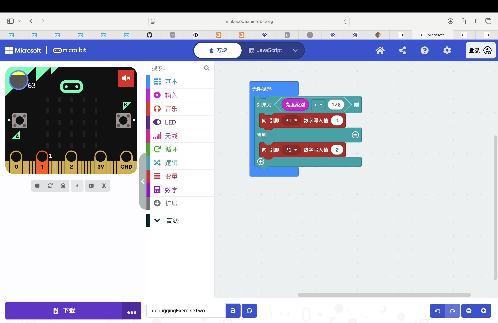
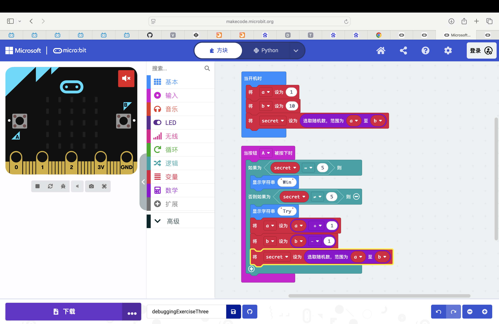

Group Information
Member 1
Student Number: [X0028067]
Student name: [Yu Kuang]
Member 2
Student Number: [X0028053]
Student name: [Ye Jiang]
Member 2
Student Number: [X00218051]
Student name: [Han Ji]
Task 1
What was the issue?
The score is only displayed in the code at initialization, and the display is not updated in the button event.
How did you solve it?
In the event handler for button A, add basic.showNumber(score) to update the display
Share a screenshot of the solution:

Task 2
What was the issue?
The condition judgment of "close the pin when the light is bright" is missing in the code, and it only opens when it is dark.
How did you solve it?
Add an else conditional closure pin
Share a screenshot of the solution:

Task 3
What was the issue?
The issue with the game is that the 1/10 chance is too small, and players are given too few tries.
How did you solve it?
To solve the high difficulty of the game, we should provide more chances for players and incrementally raise the probability of selecting 5. Our approach is to reduce the number generation range whenever "secret" is not 5.
Share a screenshot of the solution:
